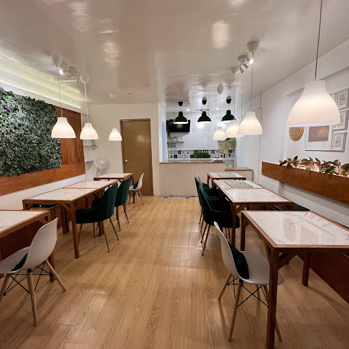

Explore Calamba!!!
Birthplace of the Philippines' national hero, Jose Rizal
The city is steeped in history and culture.
Learn More
Home
Bahay ni Jose Rizal
Two-storey Bahay na Bato: The Rizal house was a classic example of a "Bahay na Bato," which means "house of stone" in Filipino. It was built with sturdy adobe bricks and hardwood, with a red tile roof that kept the house cool in the tropical heat.
Church

St. John Baptist Church
Located at the corner of Mercado and JP Rizal Streets, the Church of St. John the Baptist stands right across the Rizal Shrine, Built in the 19th century, it was here, on June 22, 1861, where Padre Rufino Collantes baptized Jose Rizal three days after his birth.
Statue
Jose Rizal's tallest Statue
The new Rizal monument is the newest tourist and historical landmark not only in the city but in the entire country. Pending its official proclamation as the tallest statue of Jose Rizal in the world, it is very well the newest pilgrim site for people around the globe who have been inspired and enlightened by our hero’s ideals and writings.
Cuisine
Virginia's Pancit Cuisine
A must-visit gem in the South that offers good food and great place for the family! Visit now and feel the magic of Christmas at Virginia's! ❤ Virginia's
Camp
Gen. Lim Birthplace Site
Vicente Lim was born on February 24, 1888, in the town of Calamba, Laguna, and was the third of Jose Ayala Lim Yaoco and Antonia Podico's four children.
Rock Formation
Rock Point
The mysterious granite cinder block of Rockpoint looks like an ancient spearhead from the hills in the resort town of Pansol. The locals say that no amount of digging or hammering over the years could demolish this pointed rock.